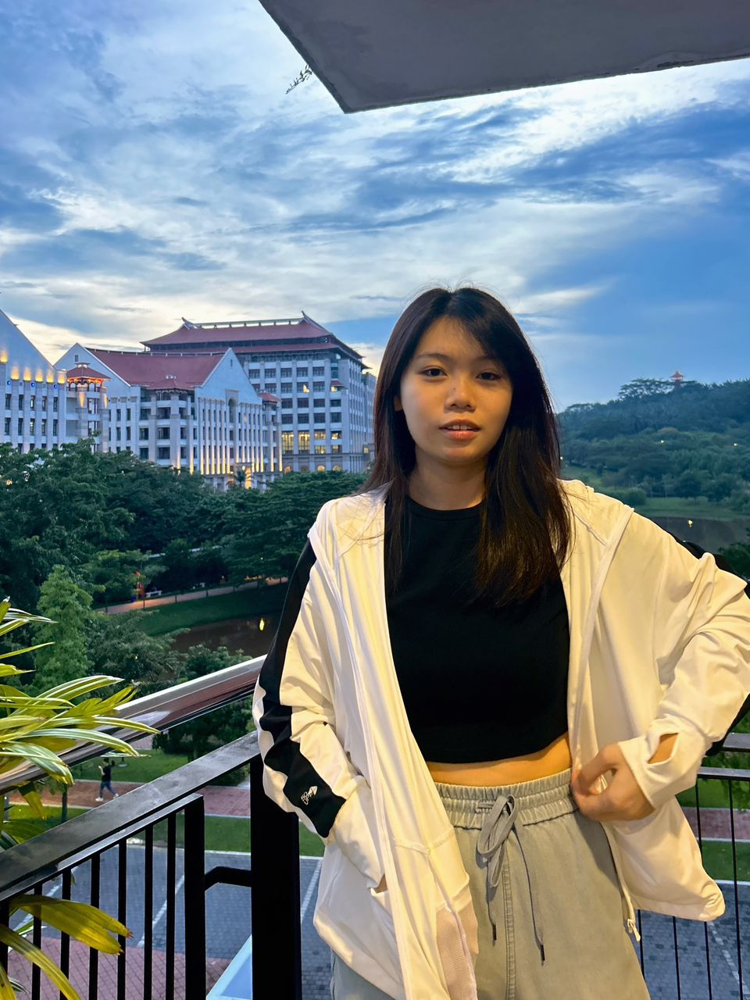

Lee Wen Tyng
Interactive Media Designer
Bridging Technology
and Storytelling.
Multimedia Designer & Developer crafting meaningful experiences — from intuitive interfaces to immersive 3D worlds.
Scroll to explore
About Me
I don't just design interfaces —
I build worlds.
With a multidisciplinary background in UI/UX Research, Game Development, and Cinematic Storytelling, I thrive at the intersection of logic and creativity.
My experience in Unity-based interactions has given me a unique edge in understanding user flows, real-time feedback loops, and high-engagement mechanics — skills that translate directly into crafting intuitive, accessible digital products.
Currently seeking a Junior UI/UX Designer role where I can contribute, learn, and build impactful digital experiences.
Background
Experience
Game Programmer Intern
Xhinobi Studio · Kuala Lumpur
- Developed interactive software for high-traffic public exhibitions, translating creative concepts into production-ready products.
- Engineered core gameplay features and UI components using Unity C#.
- Optimized performance to ensure 100% stability during live exhibition events.
President & Founder, Yoga Club
Xiamen University Malaysia
- Founded and led the Yoga Club, organizing workshops for 40+ participants with end-to-end event management.
Game Jam 2025 — Art Team
Xhinobi Studio
- Designed and prototyped a playable game within a 48-hour deadline, focusing on rapid problem-solving under pressure.
Recognition
Achievements

Best Final Year Project
Recognized for excellence in Interactive Media Design at Xiamen University Malaysia.

Achievement Title
Brief description of this accomplishment and its significance.
Get in Touch
Let's create something
meaningful together.
wentyng65@gmail.com
Location
Melaka, Malaysia